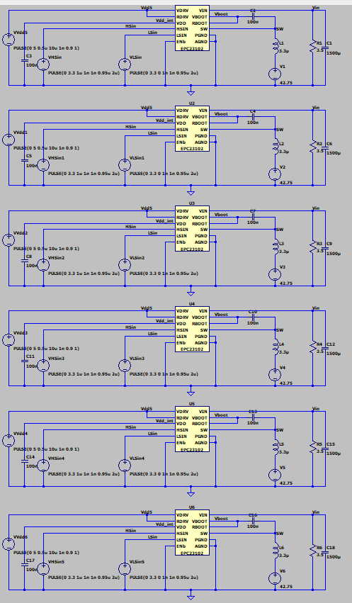

Predictive HESS
Developing a custom proprietary Hybrid Energy Storage Architecture utilizing predictive control logic.

The Concept
Modern high-performance power systems frequently encounter a fundamental trade-off: high energy density (batteries) versus high power density (supercapacitors). Subjecting a lithium-ion battery pack to massive, instantaneous current transients severely degrades its lifespan and thermal stability.
This project explores a Hybrid Energy Storage System (HESS) that actively manages the power split between a battery bank and a supercapacitor module. By routing high-frequency, high-current transients to the supercapacitors, the system shields the primary battery pack, drastically improving overall cycle life and thermal safety.
Simulation & Architecture
Rather than relying on simple passive filtering or basic rule-based logic, this architecture utilizes predictive analysis to anticipate load demands. The core components of the simulation involve:
- Bi-directional DC-DC Converters: Regulating the power flow between the distinct voltage levels of the battery and supercapacitor banks to the common DC bus.
- Predictive Power Management: Algorithms designed to forecast sudden power spikes based on load profiles, pre-emptively engaging the supercapacitors to handle the brunt of the transient load.
- Thermal & Stress Mitigation: Using Ansys to simulate the thermal dissipation reductions on the battery pack when the HESS logic is active.
Current Status & Next Steps
The system logic and power electronics topology are currently undergoing rigorous simulation. The immediate next phase involves finalizing the predictive control algorithms in software before transitioning to a scaled-down hardware prototype to validate the efficiency gains physically.